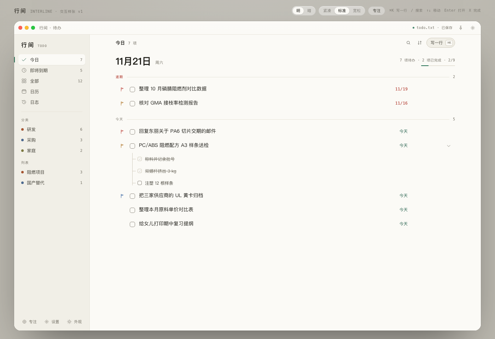
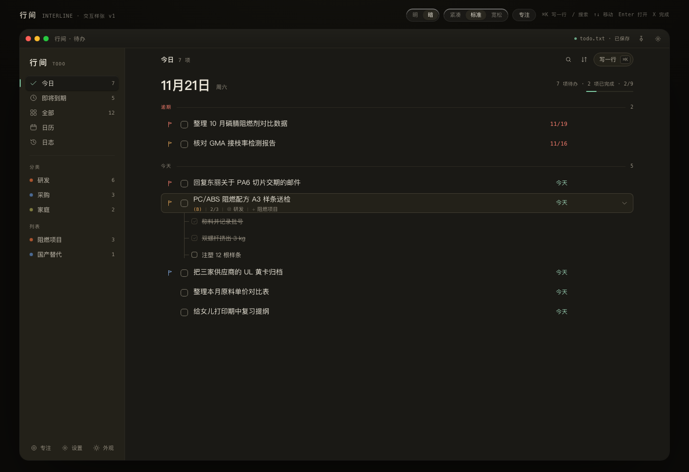
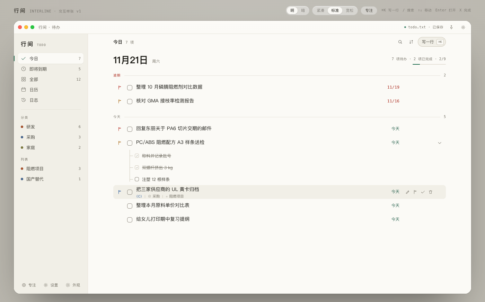
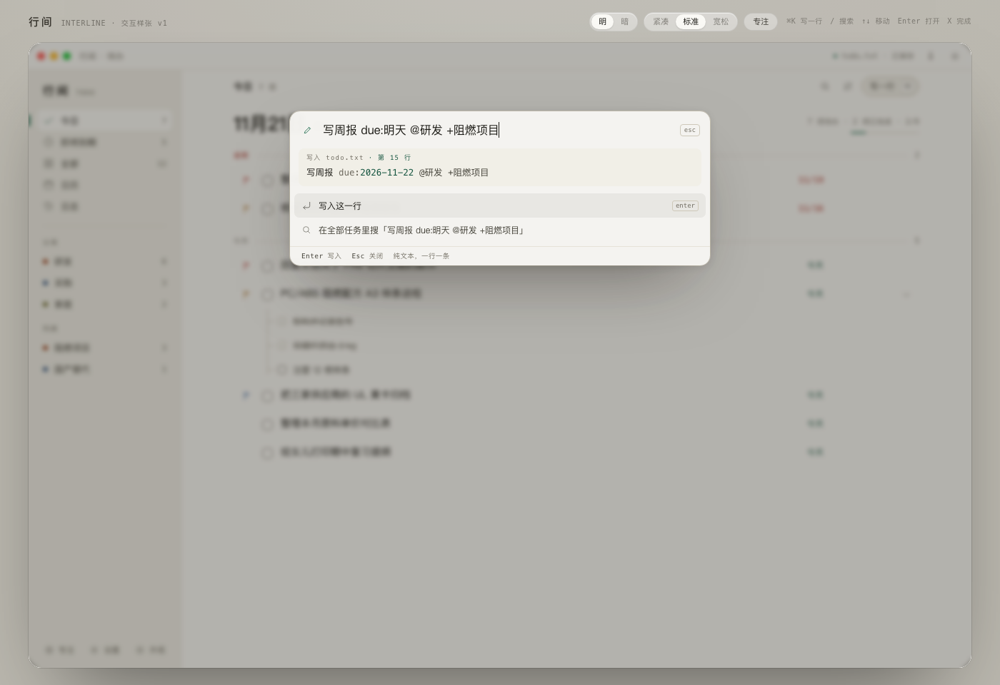
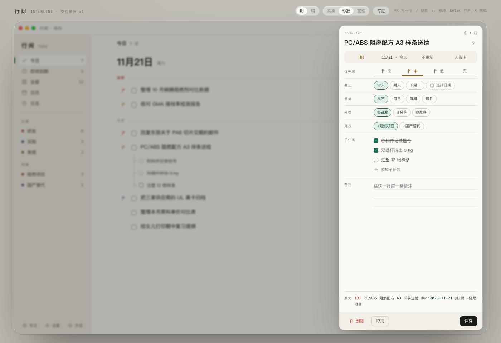
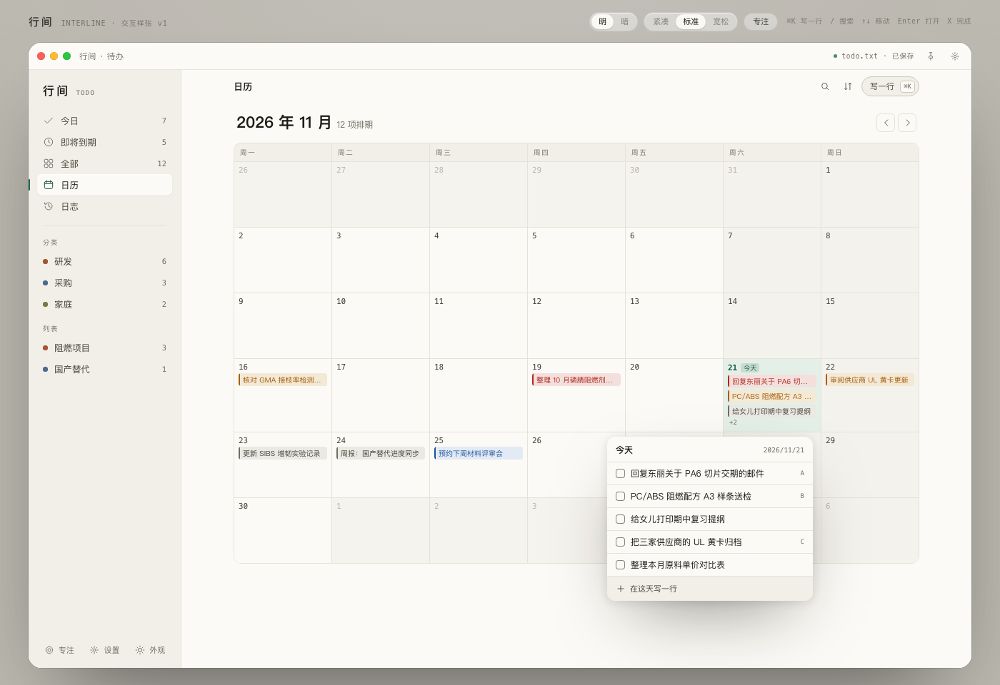
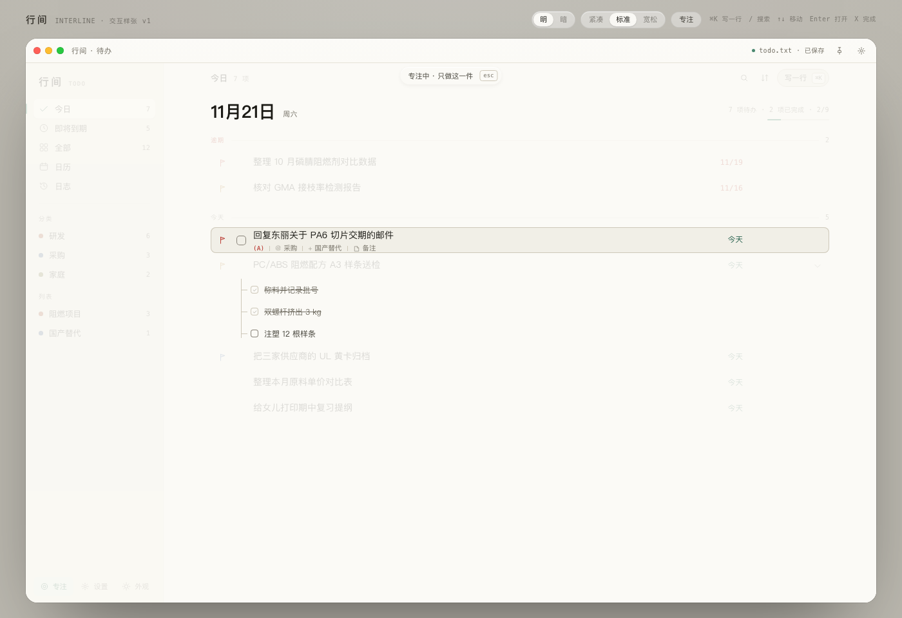

这份提案只回答一个问题。一个把 todo.txt 当作唯一真相的本地待办工具，在 2026 年的主流设计语言里应该长什么样。我的结论先说：留住账簿的诚实，拆掉它的栅栏。
留住的是三件事：可核对、安静、一行一条。拆掉的也是三件事：用 1px 线承包层级、把期限折进 hover、让纯文本在界面上没有证据。
打开交互样张 ⌘K 可写一行现行的「工作登记簿 / 墨绿账簿」是一套有自己语法的界面。它的完成度没有问题。真正的问题在于，这套语法只对做界面的人可见。
界面里有六种线与描边令牌：border / border-strong / row-line / row-line-child / row-line-halo / control-line。每一层关系都靠 1px 画出来，层级是靠围栏成立的。
截止日、子任务进度、分类与标签默认 opacity: 0，鼠标悬停才浮出。浏览时干净，日用时费劲。
产品真正的护城河是 grep、git、topydo、脚本批处理。界面里却看不到一行原文，用户感受不到数据是可读、可 diff 的。
2026 年的主流设计语言有三个可辨认的动作。问题在于，它们各自都在服务「第一次看见」，而这个工具要服务「每天看五十次」。
第一是深度分层。 Apple 的 Liquid Glass 把层级从尺寸与颜色移到了深度、模糊与透光，按钮与面板浮在内容之上，靠材质说明前后关系。1 第二是目的性动效。 动效开始承担状态、层级与反馈，而不再只是过渡。2 第三是意图驱动入口。 用户表达目标，界面负责组装步骤，命令面板与自然语言输入变成主入口。2
但趋势自己先纠了偏。WWDC 2026 上 Apple 下调了 Liquid Glass 的默认透明度，在系统设置里加了从 clear 到 frosted 的滑杆，也重画了侧栏圆角与图标，理由是可读性。3 4 一条被大规模抱怨过的语言，最后的修正方向是「退回去一点」。
一条硬规则。 玻璃只出现在临时层，包括命令面板、编辑浮窗、当天浮纸与 toast。书写面永远是不透明纸。理由有两条，一条是可读性，一条是长时间注视的疲劳。这条规则让方案站在「被修正后的 Liquid Glass」这一边，也保住了这个产品最像纸的那部分。
每个动作都配一条可执行的规则和一个诚实的代价。没有代价的设计方案只是效果图。
把界面收成三层材质。桌面是最外层的灰纸，只在窗口之外出现；纸面是内容所在的暖白；浮纸是编辑浮窗与当天浮纸，靠投影与顶部微光浮起来。层级由亮度与阴影承担，1px 只留给真正需要边界的地方，也就是交互控件的 --control-line，它必须过 WCAG 1.4.11 的 3:1。
代价 阴影比 1px 更难调。层数必须克制，滚动区域里不能挂大模糊。
把日期做成一根常驻的右列，像账本的金额栏。它一直可见，等宽数字，右对齐；今天用强调绿，逾期用红，其余用次级墨色。分类、标签、重复、备注仍然折在标题下方，只在悬停或选中时出现。列表的阅读顺序因此变成一次水平扫视，事情在左，期限在右。
代价 常驻列吃掉 56px。窄窗口里长标题会少几个字，换来的是「一眼知道今天还剩什么」。
把命令面板做成这个产品的主入口，名字就叫「写一行」。输入一句自然语言，下面实时回显它写进 todo.txt 的规范化结果，包含优先级、due:、@分类、+列表 与 rec:。编辑浮窗底部也常驻一条「原文」，随手改标题时同步更新。
代价 相对日期（明天、后天、下周一、+3）需要维护一张词表，中文歧义要写测试兜住。
完成一条任务时，一条 1px 的墨线从左往右划掉标题，240ms 后整行收拢消失。重复任务在同一位置长出新的一行，底色先亮一下再退去，toast 报「已为你排到 12月1日」。颜色在这个产品里只编码状态，动效是唯一还能讲「刚刚发生了什么」的通道，所以它必须准确，不能装饰。
代价 完成多等 200ms 才消失。对一天几十次的动作，这 200ms 必须换来「确实做完了」的确认感，否则就是负担。
专注模式把侧栏、页头与其余行压到 14% 透明度，只留一条任务，页顶给一个「专注中」的小条，Esc 退出。它不新增数据，也不新增页面，只改一次透明度。
代价 上下文被藏起来，可能让人忘了别的任务。入口必须显眼，退出必须一键。
令牌是这套语言的词典。下面的数值都可以直接落进 index.css 的 §1，明暗各一套。
暗色不用蓝黑，用带纸感的暖黑 #1a1915，强调色提到 #7ec9a2。这样它仍然像同一本书的夜读版，不像另一个产品。
两族分工不变。界面字承担全部文字，等宽字只归读数、键位、行号与日期列。层级靠字号与颜色，不靠字重堆。
圆角 4 / 6 / 10 / 16，按钮与胶囊走 999。投影永远带一条顶部白色内高光，让光从上方来。
曲线只有两条：cubic-bezier(.2,.7,.25,1) 与一个 220ms 的轻微弹簧。没有回弹过冲，没有逐帧位移。
外壳只做减法。活动栏并进侧栏，内容收在 980px 的阅读宽度里，窗口再宽也不把日期列推到屏幕边缘。







这套界面靠三条纪律成立。任何一条破了，整套语言就退回普通待办。
| 键 | 动作 | 说明 |
|---|---|---|
⌘K | 写一行 | 任何页面可用，输入即规范化回显 |
/ | 搜索 | 搜索框非常驻，关闭时一并清空关键词 |
↑ ↓ | 移动焦点 | 行是唯一焦点单位，箭头键改展开 |
Enter | 打开浮窗 | 与双击标题等价 |
X | 完成 | 空格不完成，避免误触 |
F | 专注 | 进入只留当前行，Esc 退出 |
Esc | 逐层退出 | 弹层 → 搜索 → 专注 → 窗口 |
| 纪律 | 规则 | 取证 |
|---|---|---|
| 悬停不重排 | 只改 opacity 与 transform，不碰 max-height 与盒尺寸 | 静止与悬停时每行 top/height 全等，layout-shift 为 0 |
| 颜色只表状态 | accent 只给今天、选中、焦点；danger 只给逾期 | 优先级用红橙蓝，是用户记号，不算状态 |
| 动效只表变化 | 完成、生成、落位才动，悬停不动 | 关掉动效后功能仍然完整 |
这套方案不改数据模型，不碰 todo.txt 的形状。改动集中在 CSS 令牌层与三个组件。
| 批次 | 改动 | 涉及文件 | 门禁 |
|---|---|---|---|
| P0 | 令牌层、行版式、日期列、内容 980 收口 | index.css §1、TaskRow.jsx、MainList.jsx | qa-css-check qa-contrast TaskRow.test |
| P0 | 命令面板与规范化回显 | 新增 CommandPalette.jsx，共用 todoParser | test:tools 导航与快捷键回归 |
| P1 | 浮窗「原文」条、完成墨线与重复生成 | EditDrawer.jsx、TaskRow.jsx | EditDrawer.test test:guard |
| P1 | 专注模式 | App.jsx、useHotkeys.js | Esc 逐层与热键回归 |
| P2 | 日历 chip 印章、当天浮纸、暗色校准 | CalendarView.jsx | CalendarView.test qa-contrast |
| 风险 | 判断 | 应对 |
|---|---|---|
| 玻璃的性能 | Windows WebView2 上 backdrop-filter 会掉帧，尤其叠在长列表上 | 只用于临时层，层数 ≤2；关闭时退化为不透明纸 |
| 980 阅读宽度 | 超宽屏上右侧会留白，有人会读成「没铺满」 | 外壳仍满宽，只有内容收口；这与编辑型产品的阅读宽度一致 |
| 日期列吃宽度 | 56px 会让长标题更早省略 | 标题悬停给 title 提示；浮窗里可读全文 |
| 解析器分叉 | 命令面板与 QuickAdd 各写一套日期语法会长歪 | 抽成 lib/parseInput.js，两侧共用，中文词表进单测 |
| 动效拖慢连点 | 完成到消失有 200ms 空窗 | 状态锁 + 立即落盘，界面只是延迟收拢 |
顺序建议。 先做 P0 的令牌与日期列，因为它不改任何交互，风险最低，收益最直接。命令面板放第二批，它需要解析器和测试先行。动效最后做，它最容易在上线后调。
一份方案的说服力，一半来自它明确拒绝了什么。